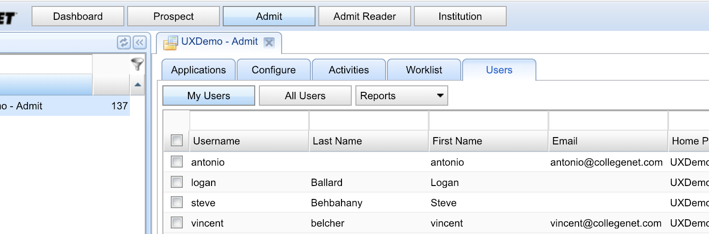
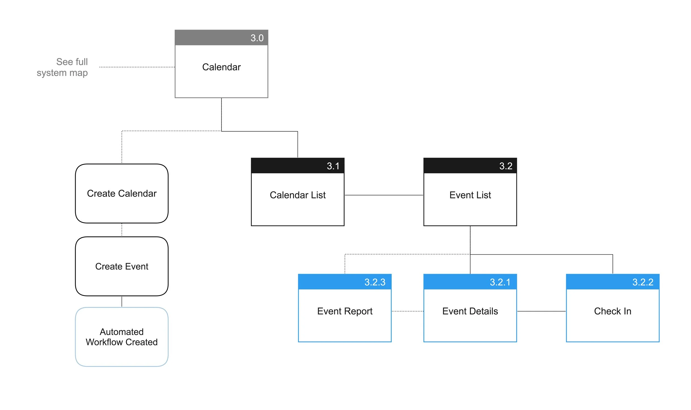
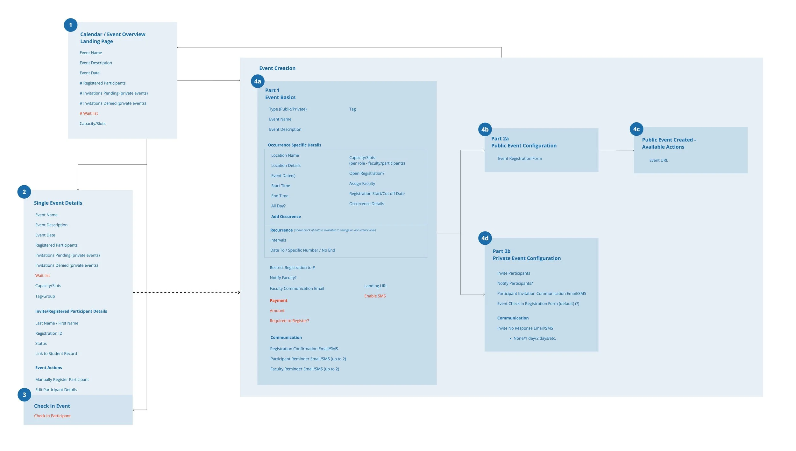
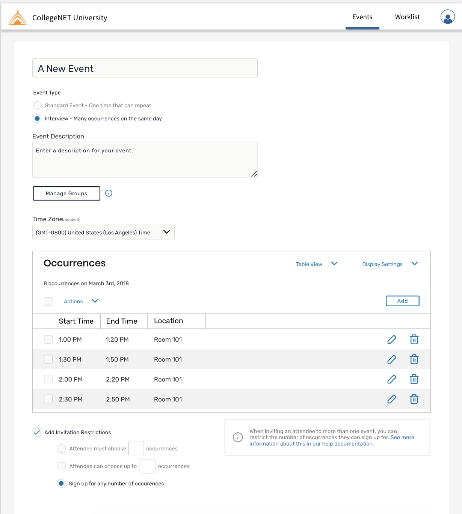
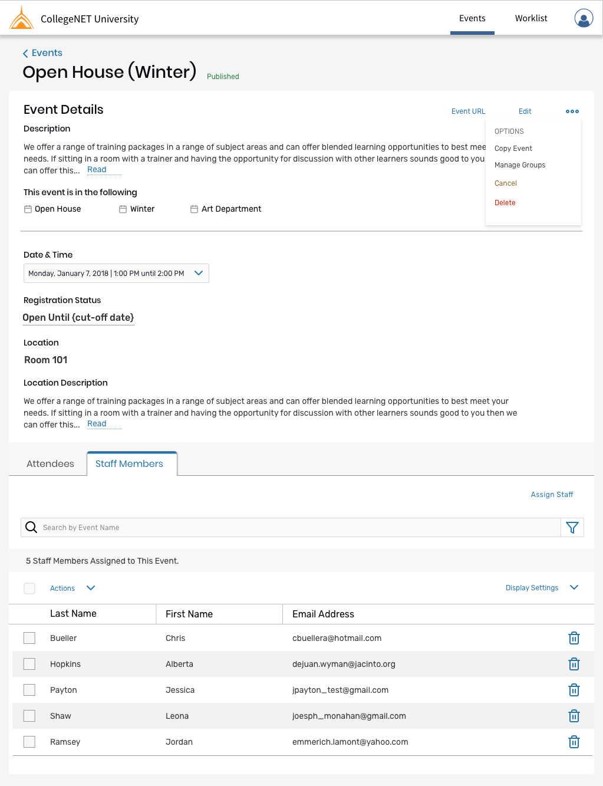

CollegeNET Case Study
At CollegeNET I was responsible for a variety of projects from helping build and design an application system from scratch to adding small features into existing projects to redesigning older legacy systems. The following case study is just one of many, but helps highlight how my process works.

The Problem
College administrators needed a way to create events at their schools that fed back into the larger data on a student so they aren’t having to communicate across multiple systems (ex. using Eventbrite and importing data later) on their campus.
This feature needed to fit into the CRM CollegeNET provides to colleges, allowing them to create the following types of events with a large margin of flexibility: open houses (open registration, no capacity cap), interviews (known participant, limited capacity), and everything in between.
Role and Team
I was lead designer on this project. My focus was in my strength of information architecture and working with the backend devs to define the system requirements. I helped with all stages of the project, from initial requirement gathering to wireframing and visual design to final design review in our test environment.
Users and Audience
There were three audience types to consider depending on where they touched the interface:
- Administrator: the admin is our main user, they are configuring the events and want to receive information on the event after the fact on attendance. This kind of information feeds into a large picture on the applicant’s engagement with the college
- Facilitators: they will receive information about the event, when they show up they need access to the list of attendees and a way to mark them as attended
- Attendees: these are prospective students for the school, they need to find out about events at the school, register, receive reminder emails, and then attend the event. Most importantly of all, have all the information easily available to them in a timely manner

Design Process
Requirements Gathering / Understanding the Problem
The first round was to gather requirements as user stories, gathering of use cases, and defining a rough scope. I work with the product manager and internal stakeholders to round out a rough idea of the feature.
Once the rough list has been created, it is vetted with product managers and internal stakeholders through a few rounds then ideally (but not always) these internal assumptions turned into a UXR project to validate the direction.



Scoping / Project Planning
Once the more serious project planning started and we had an idea of what this feature would look like when truly fully-featured, we worked with the product manager and defined the scope of V1.
We also vetting the use cases with a few clients at this point to make sure we weren’t too off base.
Wireframes
Once the rough ideas had been signed off by stakeholders and the technical team, we began wireframing the interface. We have rounds of internal usability testing with accounts managers and discussions with engineering during this phase as well as beginning to rough out documentation to make sure decisions aren’t lost.
Final Designs / Documentation
Once the wireframes were in a good place and we felt like iterations would be at a minimum when development started, we moved onto final designs.
We do an official handoff to the devs before work begins, answering all questions and making adjustments as needed.
Pattern Library
We put a lot of consideration into each of the components that we built as they were getting added as first drafts into our new pattern library.

Outcome
The final outcome is a fully-functioning event service that enables the client to set up an event, post, and invite facilitators and all of the communications automation is taken care of for them. We received a lot of great feedback from clients and we are beginning to see feeds of events on their websites.
Issues Faced
Some of the issues or problems that came from the first developed iteration:
- Without the invitation side of the feature we know that it isn’t as fully featured as it should be and we won’t be able to go back for 6 months or more.
- In the beginning of the project against our better judgement decided the configuration should be one page, it’s too long and overwhelming and could easily be sectioned into a step-by-step for ease of use. We are planning on adjusting that in future versions.
- When looking at an event’s details when there are multiple occurrences the information hierarchy of what belongs to the event as a whole (the name) versus to a single event (the date) has lead to some confusion. We iterated on this and a new version is slated in the next few months.